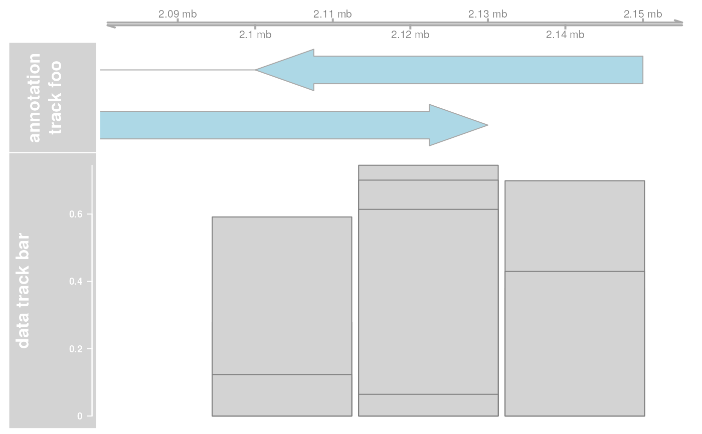
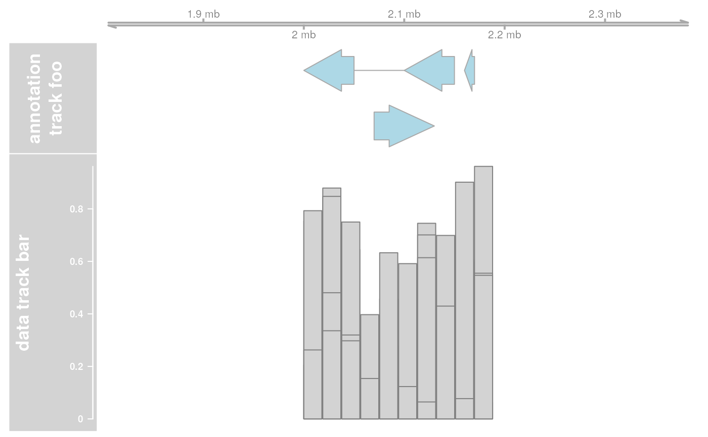
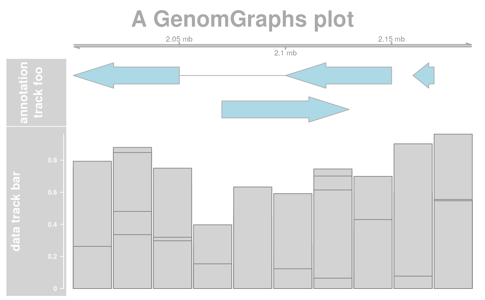

The main plotting function for one or several GenomeGraph tracks.
plotTracks.RdplotTracks is the main interface when plotting single track
objects, or lists of tracks linked together across the same genomic
coordinates. Essentially, the resulting plots are very similar to the
graphical output of the UCSC Genome Browser, execpt for all of the
interactivity.
plotTracks(trackList, from=NULL, to=NULL, ..., sizes=NULL, panel.only=FALSE, extend.right=0, extend.left=0, title.width=NULL, add=FALSE, main, cex.main=2, fontface.main=2, col.main="black", margin=6, chromosome=NULL, innerMargin=3)
Arguments
| trackList | A list of GenomeGraph track objects, all inheriting from class
|
|---|---|
| from, to | Charactar scalar, giving the range of genomic
coordinates to draw the tracks in. Note that |
| ... | Additional arguments which are all interpreted as display
parameters to tweak the appearance of the plot. These parameters are
global, meaning that they will be used for all tracks in the list
where they actually make sense, and they override the track-internal
settings. See |
| sizes | A numeric vector of relative vertical sizes for the
individual tracks of lenght
equal to the number of tracks in |
| panel.only | Logical flag, causing the tracks to be plotted as
lattice-like panel functions without resetting the plotting canvas
and omitting the title pane. This allows to embed tracks into a
trellis layout. Usually the function is called for a single track
only when |
| extend.right, extend.left | Numeric scalar, extend the plotting
range to the right or to the left by a fixed number of bases. The
final plotting range is defined as |
| title.width | A expansion factor for the width of the title panels. This can be used to make more space, e.g. to accomodate for more detailed data axes. The default is to use as much space as needed to fit all the annotation text. |
| add | Logical flag, add the plot to an existing plotting canvas without re-initialising. |
| main | Character scalar, the plots main header. |
| cex.main, fontface.main,col.main | The fontface, color and expansion factor settings for the main header. |
| margin | The margin width to add to the plot in pixels. |
| innerMargin | The inner margin width to add to the plot in pixels. |
| chromosome | Set the chromosome for all the tracks in the track list. |
Details
GenomeGraph tracks are plotted in a vertically stacked layout. Each track panel is split up into a title section containing the track name, as well as an optional axis for tracks containing numeric data, and a data section showing the actual data along genomic coordinates. In that sense, the output is very similar to the UCSC Genome Browser.
The layout of the individual tracks is highly customizable though so
called "display parameters". See settings for details.
While plotting a track, the software automatically computes HTML image
map coordinates based on the current graphics device. These
coordinates as well as the associated annotation information can later
be used to embed images of the plots in semi-interactive HTML
pages. See ImageMap for details.
Value
A list of GenomeGraph tracks, each one augmented by the computed image
map coordinates in the imageMap slot, along with the additional
ImageMap object titles containing information about the
title panels.
See also
Examples
## Create some tracks to plot st <- c(2000000, 2070000, 2100000, 2160000) ed <- c(2050000, 2130000, 2150000, 2170000) str <- c("-", "+", "-", "-") gr <- c("Group1","Group2","Group1", "Group3") annTrack <- AnnotationTrack(start=st, end=ed, strand=str, chromosome=7, genome="hg19", feature="test", group=gr, id=paste("annTrack item", 1:4), name="annotation track foo", stacking="squish") ax <- GenomeAxisTrack() dt <- DataTrack(start=seq(min(st), max(ed), len=10), width=18000, data=matrix(runif(40), nrow=4), genome="hg19", chromosome=7, type="histogram", name="data track bar") # \dontshow{ ## For some annoying reason the postscript device does not know about ## the sans font if(!interactive()) { font <- ps.options()$family displayPars(annTrack) <- list(fontfamily=font, fontfamily.title=font) displayPars(ax) <- list(fontfamily=font, fontfamily.title=font) displayPars(dt) <- list(fontfamily=font, fontfamily.title=font) } # } ## Now plot the tracks res <- plotTracks(list(ax, annTrack, dt))## Extend plotting ranges res <- plotTracks(list(ax, annTrack, dt), extend.left=200000, extend.right=200000)## Add a header res <- plotTracks(list(ax, annTrack, dt), main="A GenomGraphs plot", col.main="darkgray")## Adding and lattice like plots library(grid) grid.newpage() pushViewport(viewport(height=0.5, y=1, just="top"))plotTracks(annTrack, add=TRUE)popViewport(1)plotTracks(dt, add=TRUE)popViewport(1)